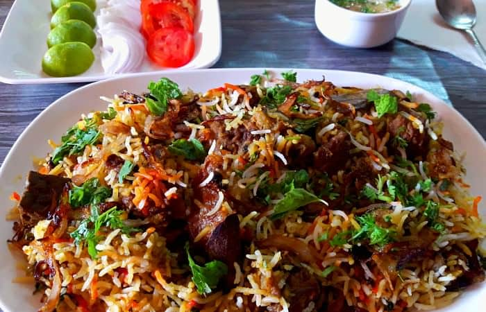

Mutton biryani is one of the most popular dish in many parts of the word.It is made with long grain rice paired with tender mutton that has been slow cooked with a marination of spices, and yogurt.
It is always a pleasure to get to eat biryani during festivals and celebrations as the dish is associated with happiness for many in India.
Today we are going to learn how to make this delicious recipe
We are going to need the following ingredients in order to make Biryani
Now that we have all our ingredients prepared, let's follow to below steps to make lip smaking biryani!
Heat oil in a kadai. Add in sliced onions and fry onions till golden brown. Drain and set aside. Rinse and soak basmati rice for 1 hour. Chop up herbs like coriander and mint and set aside. Soak saffron and food colour in milk and set aside. Make sure you prepare the shahi garam masala powder (All Spice Powder) as mentioned here.
Take mutton in a large bowl and add marinating ingredients and mix really well. Set aside to marinate for 1 hour to overnight. If marinating overnight put the bowl in fridge to marinate. Also remove the mutton from fridge 1 hour before cooking to bring it back to room temp.
Now lets cook basmati rice. You need to cook the rice until it is 50 percent cooked. Bring large pot of water to a boil, add salt. Once the water starts to boil, add in drained soaked basmati rice. Cook for 3 to 4 mins till rice is 50% cooked. Don’t drain it, take it off the heat and immediately start the assembling of biryani.
Take a large pot, You can use any biryani pot or dutch oven. add mutton spread it in the bottom. Now top with half of the rice, use a slotted spoon to drain the rice from the water and add it directly over the marinated mutton and spread evenly. Top with half of the fried onions, coriander and mint leaves. Top with more rice and top with fried onions, coriander and mint leaves. Sprinkle with fried cashews and kishmish. Add extracts over the rice. Pour the saffron milk over it also.
Seal the rim of the pot with a sticky atta dough. Place a lid. Press firmly to seal it well. Top with mortar and pestle or any heavy objects like a pot filled with some water. Cook on a very low heat for 45 mins. Once the time is up, remove the biryani from heat and set aside for 10 mins. Open the lid, fluff up the rice. Serve hot.